Jake the dog has magical shapeshifting capabilities. He can stretch and contort every part of his body. He
can even add or subtract certain body parts. Jake has 2 brothers. Jermaine, who he sometimes visits in his
dreams
to catch up about each others lives, and his adopted brother Finn. Finn was found in a forest abandoned as a
baby by Jake's parents, they then brought him home and decided to raise him as their own.
Jake for a long time had no idea how he had gotten his powers since his
parents were just regular dogs. For a long time he had thought it was from rolling in a muddy puddle as a
puppy, when really its a much more complicated story than that.
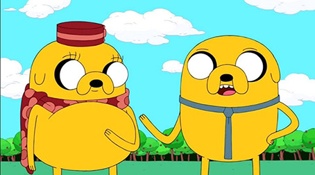
Jake was conceived when both of his parents, Margaret and Joshua who were crime fighting investigators, were
doing an investigation due to a missing pie while Margaret was pregnant with Jake’s half brother Jermaine.
While working, a strange blue shapeshifting creature showed up and bit Joshua on the head. When Margaret
embarked on a quest to look for the creature to try and get more of its venom, Joshua developed a large blue
bump on his head. The large lump all of a sudden burst revealing a puppy who was Jake! After this his
parents both agreed to never tell Jake the truth of how he came to be.
Many moons later in the 10th season the blue creature came back for Jake telling him that they had to leave
while touching his shoulder, which turned Jake blue. He then summoned an interdimensional portal and pulled
Jake through while introducing himself as Warren Ampersand, Jake’s biological father. Which in the end Jake
ended up sending him into a black hole due to Warren trying to take over Jake’s powers.
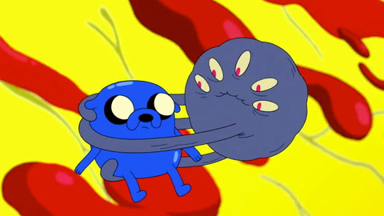
Jake started off as a career criminal before he became a hero. He used to be in a gang of thieves then left
his life of crime to become an adventurer and fight monsters alongside Finn. He isn’t as enthralled to fight
monsters as Finn but he does aspire to be a ninja one day. He is a masterfully skilled musician and chef,
who also has his own newspaper column named “Begs the question”. He relies heavily on his powers to
overpower his opponents when in combat
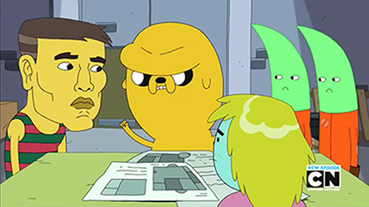
Stretchy Powers: Hall of Fame Moments
Jake the dog has a magical ability to shapeshift, by stretching it allows himself to contort his body into
any shape or form imaginable. There have been so many occasions where he has saved the day or just had
ridiculous transformations. Here are a few that are loved by many people including myself in particular:
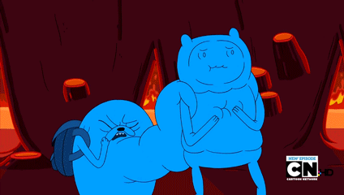
Here you can see a copy of Finn protruding from his gut, gifting the Fire King a koala.
Finn was interested in the Flame Princess but was too shy to talk to the Fire King (her father). So to try
and win over the Fire King and impress him, Jake decided to disguise himself to help Finn get on his good
side which then ends up backfiring.
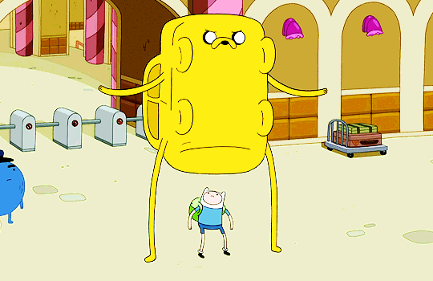
Jake has transformed into a cop car while he and Finn were investigating a "thief" in the Candy Kingdom.
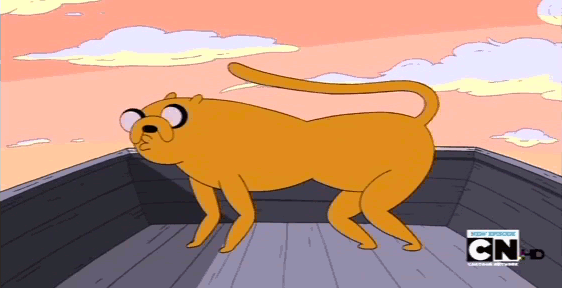
Jake was at home with BMO and Finn. They were suggesting what he should turn into and Finn had mentioned a
farting cheetah, while BMO suggested an external hard drive or cookie.
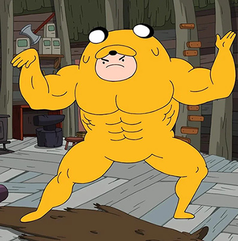
Finn was wearing Jake as a suit (the Jakesuit) to gain “extra strength” and experience Jake’s stretchy powers
for fun at their home. Little did he know that the stunts he was doing were hurting Jake. Finally Jake spat
him out when Finn decided to do flips off of their tree house after swinging around like Tarzan and landed
on the fence crotch first.
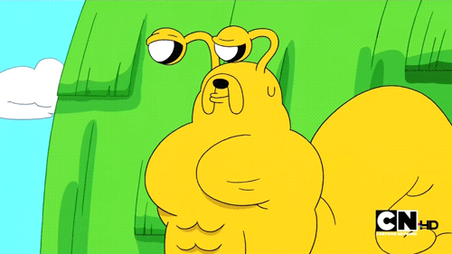
Jake transformed himself to look like a giant lady snail and man snail to give advice and help
Snorlock out with the other giant snail ladies. Finn and Jake taught him how to beatbox and swing
swords to gain their attention. Resulting in all the snail ladies finding out that Snorlock is
actually a slug which makes them no longer interested. Snorlock then found himself a slug lady and
shared many smooches with one another.
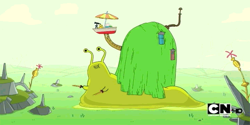
Jakes Love for Food and Recipes
Jake is just a simple dog who also happens to be a very passionate foodie.Throughout the series, he comes up
with some wild and imaginative recipes, often turning mealtimes into epic events.
Here are some of his popular recipes from dishes on the show that he has created:
The Greatest Sandwich Jake Ever Made:
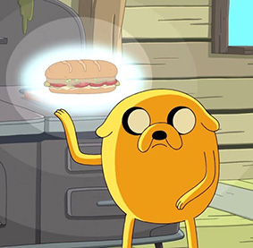
Before beginning you must receive instruction from the realm of creation above you for the sandwich you are
about to conceive. Jake’s most legendary sandwich starts with a perfectly toasted baguette and just gets
more crazy from there:
You start with slather cream cheese onto the bread
Pickles from Prismo
Dill
Diced boiled eggs
Bird from the window
Common cucumber
Sliced roma tomatoes
Sweet yellow onion, organic
Tears for salt
Meat prepared sous-vied with rosemary and thyme
Bacon
The most important part, Lobster soul
You then can close it up and enjoy!
It’s unfortunate because the second Jake was about to take a bite of this delicious creation, Magic Man ended
up teleporting in and stole the sandwich.
Jake's Bacon Pancakes:
The most iconic of Jakes creations has to be his bacon pancakes.
Making Bacon Pancakes is quite the straight forward recipe. You just grab your favourite pancake recipe/mix
and some bacon. Then while cooking up your pancakes you add the bacon. The recipe is as simple as the catchy
song he sings:
Jake's Everything Burrito:
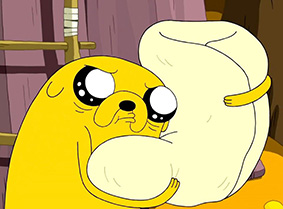
This abnormally large burrito is definitely one of Jake’s most over the top dishes. It is a huge tortilla
filled with the most random, crazy assortments of edible and inedible ingredients. First you must grab
yourself the largest white tortilla you can find. Then if you really want to try and give it a go and
recreate this monstrosity you must fill it with random things you may have on hand. It was hard to decipher
what exactly is in the burrito itself so this is just some of the items I could identify:
1 Pumpkin
Pineapple
Carton of Milk
2 Stacks of Buttered Pancakes
Ham
1 Frying Pan
1 Mug
Eggs
Cake
1 Glass of Lemonade
Half of an Apple
1 Loaf of Bread
1 Singular Buttered Waffle
1 Turkey
2 Tacoes
1 Burger
1 Spatula
Spaghetti
Chinese Food Container(with chopsticks)
1 Hotdog
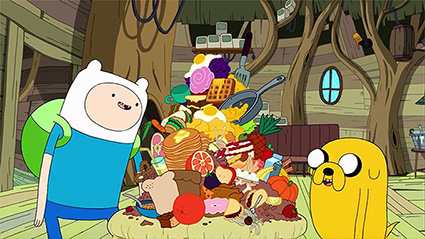
And much much more…
In the end the monstrous burrito actually ended up being poisoned and Jake decided to bury it in his
back yard.
Jake has also been seen making soups, meatloaf and different Korean dishes like Bibimbap.
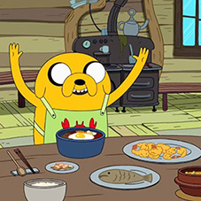
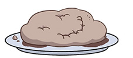
Fun fact: Despite being best friends with Finn, he has admitted his love of human flavoured soy
products.
Rainicorns were known for feeding on humans years ago. But now they eat human flavoured products that
Lady
and her family have introduced to Jake.
Relationship Advice
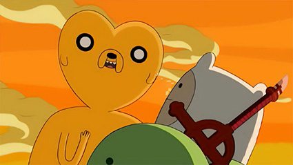
Jake was known for being quite the flirt before he settled down with his girlfriend Lady Rainicorn.
Throughout the series Jake is known for giving Finn and other creatures living in the “Land of Ooo” lots of
advice when it comes to romance. There’s a fan theory that Jake is secretly the mysterious author “Jay T.
Doggzone”, who wrote the book “Mindgames” which is all about navigating the world of romance.
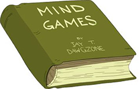
Here are some advice he has shared, that you yourself could use from day to day life with the ladies/fellas:
A direct quote from the book “Mindgames” he showed Finn. “Now, to be clear, Jay T. Doggzone does not
condone random flirtation with want on babes. But rather careful consideration of which lovely honey
gives your heart the bu-bumps. Cause it’s all about the bu-bumps. Secondly, you gotta remember to be
smooth. No bodacious babe belongs with a bumbling, baby, beau, bereft of bravado.”
In an episode he breaks down dating into 15 tiers for Finn- Tier 1. Hugging, Tier 2. Smoochin, Tier 5.
You can touch all 15 feet of her long beautiful stomach, Tier 8. touching her horn, and Tier 15. Well
Finn’s not allowed to go to tier 15…. DO NOT DO TIER 15!!
Stop hiding your feelings man, go out there and smooch up
Let me share with you a little secret on how to win the heart of a princess. It’s not easy but you have
to be persistent. You might have to defeat a demon lord and warp through several worlds but once you
walk up the wizard stairs and produce your magic key, you get in the Water world and unlock the chamber
door then walk right up to the princess and give her a smooch
Being crazy is hard, you’re getting all hung up, all hung up on imaginary problems. You gotta focus on
what’s real man
Girls are like horses. When you fall down it’s important that you get right back on again…on a different
horse and there’s a lot of fish in the sea, a lot of fish
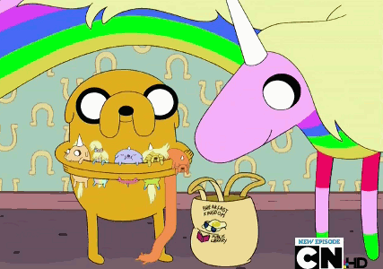
Jake now has been in a relationship with Lady Rainicorn since the beginning of the show. They had 5
Rainicorn/Dog hybrid puppies together. Their relationship is extremely special due to the past wars between
dogs and rainicorns. Luckily Lady’s parents Bob and Ethel have accepted Jake into their family because
during the war a dog had saved Bob's life.